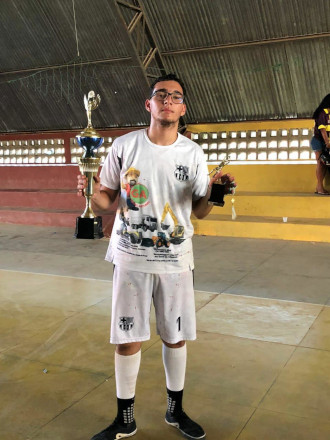
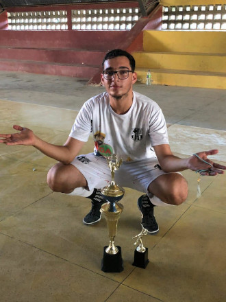
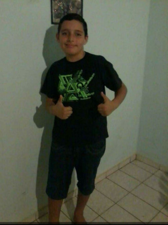

MEU AMIGO SEM CABELO
Rapaz, o Bitelão é praticamente um reflexo ambulante! O sol bate na cabeça dele e já ilumina o quarteirão inteiro. Dizem que quando ele passa na frente de uma câmera, o brilho é tanto que parece que tão tirando foto com flash. O pior é que ele tenta disfarçar com boné, mas todo mundo sabe que aquilo é só um esforço desesperado pra esconder o desmatamento capilar. Se cabelo fosse árvore, a cabeça dele já tava virando deserto faz tempo!
SUPER TROUXA
O Bitelão não precisa nem de espelho pra se arrumar, é só olhar pra própria cabeça que já vê o reflexo dele em HD. Dizem que quando ele anda no sol, dá pra enxergar o brilho da careca dele lá do espaço, e os astronautas até confundem com um novo satélite. Ele fala que não liga pra isso, mas a verdade é que até o shampoo dele virou sabonete de tanta falta de uso!
O Bitelão já tá tão acostumado a segurar bolsa pra quem não quer nada com ele que, se vacilar, vão achar que ele foi contratado como segurança de shopping. O cara é praticamente um cabide humano de friendzone, sempre ali, firme e forte, carregando bolsa e esperanças que nunca vão se realizar!
GRANDE JOGADOR DE FUTEBOLA
 Rapaz, se o Bitelão fosse tão bom no futebol quanto é em segurar bolsa, já tava jogando na Europa! Mas a realidade é outra... Dizem que ele dribla tão bem que até a bola foge dele sozinha, de medo de ser maltratada. O chute dele é tão preciso que, quando tenta acertar o gol, a bola já sabe que vai parar no mato ou na casa do vizinho. Os adversários nem se preocupam em marcar ele, porque sabem que o maior inimigo dele em campo é ele mesmo. E quando, por um milagre, ele acerta um passe, a torcida já comemora como se fosse um gol! Se dependesse do talento do Bitelão, o futebol era jogado sem bola, só pra evitar o vexame!
MANO BIBI
No fim das contas, o Bitelão pode até ser careca, ruim de bola e um mestre em segurar bolsa na friendzone, mas ele é nosso parceiro de todas as horas. A zoeira nunca para, mas a gente sabe que ele tá sempre ali, firme e forte, pronto pra dar risada junto e fazer parte da resenha. Amigo assim é raro, igual cabelo na cabeça dele!
Surpresa ➡ clique aqui 🌞
No final, a zoeira até rola, mas o Bitelão é o amigo que todo mundo quer ter por perto, sempre garantindo diversão e amizade de verdade!